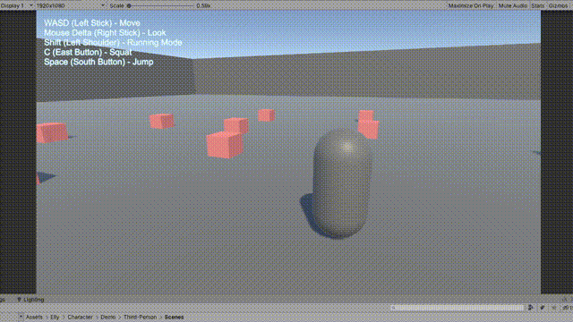

Demo Example
First-Person
Scenes path:
Assets/Elly/Character/Demo/First-Person/Scenes/Built-In
Assets/Elly/Character/Demo/First-Person/Scenes/Custom
Built-In First-Person Character Script
Built-in script contain moving and looking action already, User does not need to code anything simply adding player input component and rigibody and you are good to go
Customized First-Person Character Script
In the custom script, It provide Jump, Squat, Running action to it
You can open the source code in here to check detail comment
Assets/Elly/Character/Demo/First-Person/Script/CustomFPSCharacter.cs
Third-Person
Scenes path:
Assets/Elly/Character/Demo/Third-Person/Scenes/Built-In
Assets/Elly/Character/Demo/Third-Person/Scenes/Custom
Built-In Third-Person Character Script
Built-in script contain moving and looking action already, User does not need to code anything simply adding player input component and rigibody and you are good to go
Customized Third-Person Character Script

In the custom script, It provide Jump, Squat, Running action to it
You can open the source code in here to check detail comment
Assets/Elly/Character/Demo/Third-Person/Script/CustomTPSScript.cs
Ghost
Scenes path:
Assets/Elly/Character/Demo/Ghost/Scenes/Built-In
Assets/Elly/Character/Demo/Ghost/Scenes/Custom
Built-In Ghost Character Script
Built-in script contain moving in 3D space and looking action already, User does not need to code anything simply adding player input component and rigibody and you are good to go
Customized Ghost Character Script
Top-Down
Scenes path:
Assets/Elly/Character/Demo/Top-Down/Scenes/Built-In
Assets/Elly/Character/Demo/Top-Down/Scenes/Custom
Built-In Top-Down Character Script
Built-in script contain moving and looking and zooming action already, User does not need to code anything simply adding player input component and rigibody and you are good to go
Customized Top-Down Character Script
Platform
Vibration
Scenes path:
Assets/Elly/Character/Demo/Top-Down/Scenes/Demo
Camera vibration feature example, You can simple call it with force parameter, and it just works. You can check button OnClick event to see the method.
Transition
Scenes path:
Assets/Elly/Character/Demo/Top-Down/Scenes/Demo
A example to show how character transition works, You can check script detail by open the source code then check comment in here.\
Assets/Elly/Character/Demo/Transition/Script